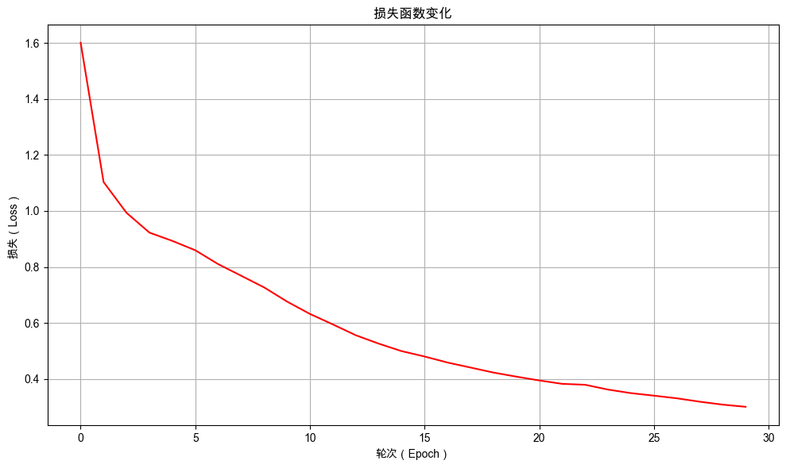

4. 工程的进化：用 PyTorch Lightning 重构#
4.1. 介绍#
在上一章，我们利用PyTorch框架成功构建并训练了一个多层神经网络，解决了“咖啡分类”这一多分类问题。然而，随着项目复杂度的增加，一个标准的训练循环会逐渐变得臃肿——我们需要手动管理训练/验证/测试步骤的切换、记录日志等。这些“样板代码”虽然必要，却分散了我们对模型核心逻辑的注意力，也使得代码的可维护性和可复用性降低。
本章，我们将引入 PyTorch Lightning 这一轻量级封装库，来应对上述工程挑战。PyTorch Lightning并非要取代PyTorch，而是在其之上提供了一层优雅的抽象，通过将模型、数据、训练逻辑解耦，让代码更清晰、更易维护。我们将用它重构上一章的“咖啡分类”项目，体验工程化实践如何提升开发效率。这不仅是工具上的一次“进化”，更是我们向构建更复杂、更实用模型迈进的重要一步。
4.2. 最少必要知识#
4.3. 环境版本#
from course_04.util import show_version
show_version()
+------+----------------------------------------------------------------------------------------+
| Info | 《动手学人工智能》 |
+------+----------------------------------------------------------------------------------------+
| 作者 | 吾辈亦有感 |
| 哔站 | https://space.bilibili.com/3461565265217538 |
| 定位 | 基于'从零构建'的理念，用实战降低学习大模型的门槛，帮助程序员快速入门大模型。 |
| 愿景 | 若我的经验能让你的AI学习之路走的更容易一点，让你的生活变得更美好，我将倍感荣幸！祝好😄 |
+------+----------------------------------------------------------------------------------------+
环境信息：
+-------------+--------------+------------------------+
| Python 版本 | PyTorch 版本 | PyTorch Lightning 版本 |
+-------------+--------------+------------------------+
| 3.12.12 | 2.9.1 | 2.6.0 |
+-------------+--------------+------------------------+
4.4. 准备数据#
4.4.1. 观察数据#
随机预览数据集中的5条数据，直观掌握原始的数据的结构，方便根据需要对数据进行预处理。
import pandas as pd
# 读取训练集数据
train_data_frame = pd.read_csv('./dataset/coffee_train.csv')
# 随机显示5行数据
train_data_frame.sample(5)
| 椰浆 | 咖啡 | 牛奶 | 糖 | 种类 | |
|---|---|---|---|---|---|
| 0 | 5.1000 | 3.5000 | 1.4000 | 0.2000 | 生椰拿铁 |
| 55 | 6.7000 | 3.1000 | 4.4000 | 1.4000 | 双椰拿铁 |
| 50 | 5.0000 | 2.0000 | 3.5000 | 1.0000 | 双椰拿铁 |
| 62 | 6.3000 | 2.5000 | 4.9000 | 1.5000 | 双椰拿铁 |
| 75 | 6.0000 | 3.4000 | 4.5000 | 1.6000 | 双椰拿铁 |
4.4.2. 自定义 PyTorch 数据集#
自定义咖啡分类 CoffeeDataset 类，需要继承 torch.utils.data.Dataset，并实现__init__、__len__和__getitem__方法。
__init__方法：初始化数据集，通常包含样本列表、标签映射等参数。__len__方法：返回数据集的长度，即样本数量。__getitem__方法：根据索引获取指定样本的数据，通常会将数据的转换过程放在这里。
在此次的任务中我们需要将csv中的每一行数据转化为一条训练样本。转化示例如下：
【图示】
其中 input_features 表示输入特征，target_ids 表示类别对应的ID。
4.4.2.1. 自定义咖啡分类数据集#
除了实现__init__、__len__和__getitem__方法，我们还需要添加从CSV文件加载数据的类方法 load_from_csv，方便直接从数据文件中直接创建数据集对象。
from torch.utils.data import Dataset
class CoffeeDataset(Dataset):
"""
自定义咖啡数据集类，继承自PyTorch的Dataset基类
用于加载和处理咖啡分类数据
"""
def __init__(self, samples, label_to_id):
"""
初始化数据集
参数:
- samples: 包含特征和标签的样本列表，每个元素是(features, label)的元组
- label_to_id: 标签到ID的映射字典
"""
self.samples = samples
# 使用提供的标签映射
self.label_to_id = label_to_id
# 创建反向映射(ID到标签)，用于后续将预测结果转换回标签名称
self.id_to_label = {idx: label for label, idx in self.label_to_id.items()}
def __len__(self):
"""
返回数据集的大小(样本总数)
返回:
- 数据集中的样本数量
"""
return len(self.samples)
def __getitem__(self, index):
"""
获取指定索引的样本数据
参数:
- index: 样本索引
返回:
- 包含输入特征和目标标签ID的字典
"""
# 1️⃣ 根据索引获取样本的特征和标签
features, label = self.samples[index]
# 2️⃣ 将标签转换为对应的ID
label_id = self.label_to_id[label]
# 3️⃣ 返回包含输入特征和目标标签ID的字典
return {
"input_features": features, # 输入特征数据
"target_ids": label_id # 目标标签ID
}
@classmethod
def load_from_csv(cls, file_path, label_to_id):
"""
从CSV文件加载数据的类方法
参数:
- file_path: CSV文件路径
返回:
- CoffeeDataset实例
"""
# 使用pandas读取CSV文件并删除包含缺失值的行
data = pd.read_csv(file_path).dropna()
# 存储处理后的样本
samples = []
# 遍历数据中的每一行
for index in range(len(data)):
# 1️⃣ 获取当前行数据
row = data.iloc[index]
# 2️⃣ 提取特征数据(除最后一列外的所有列)，并转换为float32类型
features = row.iloc[:-1].values.astype("float32")
# 3️⃣ 提取标签(最后一列)
label = row.iloc[-1]
# 4️⃣ 将特征和标签作为一个元组添加到样本列表中
samples.append((features, label))
# 创建并返回CoffeeDataset实例
return cls(samples, label_to_id)
4.4.2.2. 加载数据集实例#
使用训练数据文件coffee_train.csv 创建并打印 CoffeeDataset 实例，并打印其第一个样本结构。
from pprint import pprint
# 使用 CoffeeDataset 类的 load_from_csv 方法加载咖啡数据集
label_to_id = {"生椰拿铁": 0, "双椰拿铁": 1, "烤椰拿铁": 2}
dataset = CoffeeDataset.load_from_csv("./dataset/coffee_train.csv", label_to_id)
# 使用 pprint 函数打印数据集中的第一个样本，展示其结构和内容
# 这有助于查看数据的格式，包括输入特征(input_features)和目标标签(target_ids)
pprint(dataset[0])
{'input_features': array([5.1, 3.5, 1.4, 0.2], dtype=float32), 'target_ids': 0}
4.4.3. 创建 Lightning 数据模组#
LightningDataModule 是 PyTorch Lightning 框架中的一个核心抽象类，它提供了一种标准化、模块化的方式来封装和管理机器学习项目中的所有数据相关操作。通过使用 LightningDataModule，开发者可以将数据处理流程与模型训练逻辑清晰地解耦，从而提升代码的可读性、可复用性和可维护性。
在传统的 PyTorch 项目中，数据下载、预处理、划分、增强等逻辑常常分散在脚本的不同部分，导致代码难以维护和复用。LightningDataModule 通过将这些步骤封装在一个类中，解决了上述痛点。
标准化数据处理四步法：
prepare_data()方法：用于下载或准备数据集。setup(stage=None)方法：根据训练的不同阶段（fit,test,predict）来准备数据集。train_dataloader(),val_dataloader(),test_dataloader()方法：分别返回训练、验证和测试阶段的DataLoader对象，定义了数据如何被批量加载、打乱等。teardown(stage=None)方法：用于清理资源，例如在训练、验证或测试结束后释放内存或关闭文件句柄。
import lightning as L
from torch.utils.data import DataLoader
class CoffeeDataModule(L.LightningDataModule):
def __init__(self, label_to_id, batch_size, train_data_file,
val_data_file="", test_data_file=""):
super().__init__()
self.label_to_id = label_to_id
self.id_to_label = {idx: label for label, idx in self.label_to_id.items()}
self.batch_size = batch_size
self.train_data_file = train_data_file
self.val_data_file = val_data_file
self.test_data_file = test_data_file
self.train_dataset = None
self.val_dataset = None
self.test_dataset = None
def prepare_data(self):
# 下载或准备数据集的操作（如果需要）
pass
def setup(self, stage=None):
# 加载完整数据集
self.train_dataset = CoffeeDataset.load_from_csv(self.train_data_file, self.label_to_id)
# 加载评估数据集
if self.val_data_file == "":
self.val_dataset = self.train_dataset
else:
self.val_dataset = CoffeeDataset.load_from_csv(self.val_data_file, self.label_to_id)
# 加载测试数据集
if self.test_data_file == "":
self.test_dataset = self.val_dataset
else:
self.test_dataset = CoffeeDataset.load_from_csv(self.test_data_file, self.label_to_id)
def train_dataloader(self):
return DataLoader(self.train_dataset, batch_size=self.batch_size, shuffle=True)
def val_dataloader(self):
return DataLoader(self.val_dataset, batch_size=self.batch_size, shuffle=False)
def test_dataloader(self):
return DataLoader(self.test_dataset, batch_size=self.batch_size, shuffle=False)
4.4.4. 架构对比：散装 vs 模块化#
💡 关键洞察：LightningDataModule 的核心价值在于标准化和模块化，它让数据处理从“临时脚本”变成了“可复用的组件”。
传统 PyTorch DataLoader
代码分散：数据下载、预处理、划分逻辑分散在不同文件或函数中
重复配置：训练、验证、测试需要分别创建DataLoader，容易产生不一致
缺乏标准化：每个项目都有自己独特的数据处理方式
难以共享：数据预处理逻辑难以在不同项目间复用
LightningDataModule
统一封装：将数据处理五步法封装在单一类中
标准化接口：preparedata、setup、train_dataloader等标准方法
一致性保证：确保训练、验证、测试使用相同的数据处理逻辑
即插即用：可在不同项目间轻松复用和共享
4.4.5. 初始化数据模组实例#
初始化数据模组实例，获取训练数据集的数据加载器，并且打印一个批次的数据。
from pprint import pprint
# 创建 CoffeeDataModule 实例并设置
label_to_id = {"生椰拿铁": 0, "双椰拿铁": 1, "烤椰拿铁": 2}
coffee_datamodule = CoffeeDataModule(label_to_id=label_to_id, batch_size=5,
train_data_file="./dataset/coffee_train.csv",
val_data_file="./dataset/coffee_val.csv")
# 调用 setup 方法初始化数据集
coffee_datamodule.setup()
# 获取训练数据加载器
train_dataloader = coffee_datamodule.train_dataloader()
# 打印一个批次的数据
print("打印一个批次的数据：")
for batch in train_dataloader:
pprint(batch, sort_dicts=False)
break
打印一个批次的数据：
{'input_features': tensor([[7.7000, 2.6000, 6.9000, 2.3000],
[5.5000, 2.4000, 3.8000, 1.1000],
[6.5000, 3.0000, 5.5000, 1.8000],
[7.7000, 3.0000, 6.1000, 2.3000],
[6.0000, 2.2000, 4.0000, 1.0000]]),
'target_ids': tensor([2, 1, 2, 2, 1])}
执行结果和我们直接使用 PyTorch DataLoader 获取的批次数据一致，都包含着输入特征input_features和目标标签target_ids。
LightningDataModule的优势
统一封装：将数据处理五步法封装在单一类中
标准化接口：preparedata、setup、train_dataloader等标准方法
一致性保证：确保训练、验证、测试使用相同的数据处理逻辑
即插即用：可在不同项目间轻松复用和共享
4.5. 构建模型#
4.5.1. LightningModule 深度解析#
LightningModule是PyTorch Lightning框架的核心抽象，它将深度学习研究中的模型、训练、验证、测试和优化逻辑封装在一个整洁的类中，让研究者能专注于算法创新而非工程细节。
你可以把它理解为一个增强版的、结构化的 PyTorch 模型类。它不仅定义了模型本身（网络结构），还显式地定义了训练、验证、测试和推理的完整逻辑，以及优化器、学习率调度器等配置。
核心价值：从80%的样板代码中解放出来
传统PyTorch需要手动编写训练循环、设备管理、分布式训练等重复代码
LightningModule自动处理这些工程细节，让代码量减少约80%
保持PyTorch原生灵活性，可在training_step中编写完整训练逻辑
4.5.1.1. LightningModule vs 传统 nn.Module#
LightningModule继承自torch.nn.Module，但提供了更高级的抽象层。两者的核心区别在于职责分离：传统nn.Module只负责模型定义和前向传播，而LightningModule将训练全流程都纳入管理。
特性对比 |
传统nn.Module |
LightningModule |
|---|---|---|
训练逻辑 |
需手动实现完整训练循环 |
仅需定义training_step，其余自动处理 |
优化器管理 |
手动创建、调用optimizer.step() |
configure_optimizers()定义后自动调用 |
设备管理 |
需手动.cuda()或.to(device) |
自动处理，无需显式设备转移 |
分布式训练 |
需手动配置DistributedSampler |
Trainer自动处理分布式采样 |
日志记录 |
需手动集成TensorBoard等 |
self.log()自动记录并集成多种日志工具 |
4.5.1.2. 为什么需要 LightningModule？#
在原生 PyTorch 中，你通常需要自己编写以下代码：
模型定义（nn.Module）
训练循环（for epoch in range(…)）
验证/测试循环
损失计算和反向传播（loss.backward()）
优化器步骤（optimizer.step()）
日志记录（print 或 TensorBoard）
设备管理（.to(device)）
检查点保存与加载
分布式训练逻辑
这些代码混杂在一起，导致：
可读性差：业务逻辑和工程代码纠缠。
可复现性差：实验结构不一致。
难以维护和扩展：修改训练逻辑可能牵一发而动全身。
样板代码多：每个项目都要重写训练循环。
LightningModule 通过一个约定俗成的结构，将上述所有部分清晰地分离，让我们专注于模型的逻辑，而非重复的样板代码。
4.5.1.3. LightningModule 的核心方法#
LightningModule通过一组标准化的方法接口，将深度学习工作流模块化。每个方法都有明确的职责，这种设计让代码结构清晰且易于维护 。
我们可以通过重写父类的特定方法来构建自己的 LightningModule。最重要的方法有：
__init__：定义模型的组件，如网络层、损失函数等（和 nn.Module 一样）。forward(x)：定义输入到输出的前向传播逻辑。注意：不要在此方法内计算损失或进行训练。training_step(batch, batch_idx)：定义单个训练批次的逻辑，此方法是必需要实现的。validation_step(batch, batch_idx)：与 training_step 类似，但用于验证集。此步骤中梯度默认是关闭的。test_step(batch, batch_idx)：与 validation_step 类似，但用于测试集。此步骤中，梯度默认是关闭的。configure_optimizers：配置模型使用的优化器和学习率调度器。Lightning 会自动调用优化器的 step() 和 zero_grad()。
除了这些必需方法，LightningModule还提供了丰富的生命周期钩子（Hooks），如on_train_start()、on_train_epoch_end()等，允许在训练的不同阶段插入自定义逻辑。
4.5.2. 用 LightningModule 重构 CoffeeClassifier 类#
import torch
import lightning as L
from torch import nn
import torch.nn.functional as F
class CoffeeClassifier(L.LightningModule):
def __init__(self, input_size=4, hidden_size=10, num_classes=3, learning_rate=0.01):
super(CoffeeClassifier, self).__init__()
self.learning_rate = learning_rate
# 定义网络层
self.input_layer = nn.Linear(input_size, hidden_size)
self.relu = nn.ReLU()
self.output_layer = nn.Linear(hidden_size, num_classes)
# 存储每个训练步骤和训练循环的损失
self.train_step_losses = []
self.train_epoch_losses = []
# 用于存储验证步骤的结果
self.validation_step_outputs = []
self.eval_accuracies = []
# 示例输入
self.example_input_array = torch.Tensor(32, input_size)
# 标签id到标签的映射，用于预测解码
self.label_map = None
def forward(self, x):
"""前向传播"""
out = self.input_layer(x)
out = self.relu(out)
out = self.output_layer(out)
return out
def training_step(self, batch, batch_idx):
"""训练步骤"""
input_features = batch["input_features"]
target_ids = batch["target_ids"]
# 前向传播
outputs = self(input_features)
loss = F.cross_entropy(outputs, target_ids)
# 计算准确率
preds = torch.argmax(outputs, dim=1)
acc = (preds == target_ids).float().mean()
# 记录日志
self.log('train_loss', loss)
self.log('train_acc', acc)
# 存储损失以便后续使用
self.train_step_losses.append(loss.detach())
return loss
def on_train_epoch_end(self):
"""在每个训练epoch结束时计算整体损失"""
if self.train_step_losses: # 确保列表不为空
# 计算并记录平均训练损失
avg_train_loss = torch.stack(self.train_step_losses).mean()
self.train_epoch_losses.append({
"epoch": self.current_epoch,
"loss": avg_train_loss.item() # 转换为 Python 数值
})
# 清空列表为下一个 epoch 做准备
self.train_step_losses.clear()
def validation_step(self, batch, batch_idx):
"""验证步骤"""
input_features = batch["input_features"]
target_ids = batch["target_ids"]
# 前向传播
outputs = self(input_features)
# 计算准确率
preds = torch.argmax(outputs, dim=1)
# 保存结果供epoch结束时使用
self.validation_step_outputs.append({'preds': preds, 'labels': target_ids})
def on_validation_epoch_end(self):
"""在每个验证epoch结束时计算整体准确率"""
# 汇总所有预测结果和标签
all_preds = torch.cat([x['preds'] for x in self.validation_step_outputs])
all_labels = torch.cat([x['labels'] for x in self.validation_step_outputs])
# 计算整体准确率
val_overall_acc = (all_preds == all_labels).float().mean()
# 记录整体准确率
self.log('total_samples', len(all_labels))
self.log('total_correct', (all_preds == all_labels).float().sum())
self.log('val_overall_acc', val_overall_acc)
# 将评估结果保存到 eval_accuracies 列表中
self.eval_accuracies.append({
"epoch": self.current_epoch, # epoch编号
"总样本数": len(all_labels), # 验证集总样本数
"正确样本数": int((all_preds == all_labels).float().sum().item()), # 预测正确的样本数
"准确率": round(val_overall_acc.item(), 4) # 准确率
})
# 清空缓存
self.validation_step_outputs.clear()
def clear_cache(self):
"""清除缓存"""
self.train_step_losses.clear()
self.train_epoch_losses.clear()
self.validation_step_outputs.clear()
self.eval_accuracies.clear()
def configure_optimizers(self):
"""配置优化器"""
optimizer = torch.optim.Adam(self.parameters(), lr=self.learning_rate)
return optimizer
def setup_label_map(self, label_map):
"""根据数据集设置标签映射"""
self.label_map = label_map
def predict(self, features):
"""
对新数据进行预测
Args:
features: 输入特征，可以是单个样本或批量样本
Returns:
predictions: 预测的标签索引
decoded_predictions: 解码后的标签名称
probabilities: 预测概率
"""
# 确保输入是tensor格式
if not isinstance(features, torch.Tensor):
features = torch.tensor(features, dtype=torch.float32)
# 确保模型处于评估模式
self.eval()
# 预测
with torch.no_grad():
outputs = self(features)
predictions = torch.argmax(outputs, dim=1).tolist()
probabilities = torch.softmax(outputs, dim=1).tolist()
# 解码预测结果
decoded_predictions = [self.label_map[pred] for pred in predictions]
return predictions, decoded_predictions, probabilities
def decode_labels(self, label_ids):
"""
将标签ID解码为标签名称
Args:
label_ids: 标签ID列表
Returns:
decoded_labels: 解码后的标签名称列表
"""
if isinstance(label_ids, torch.Tensor):
label_ids = label_ids.tolist()
return [self.label_map[label_id] for label_id in label_ids]
4.5.3. 创建模型实例#
创建咖啡分类模型实例，并打印模型摘要：
输入特征维度为4（椰浆、咖啡、牛奶、糖）
隐藏层维度为10
输出类别数为3（生椰咖啡、双椰咖啡、烤椰咖啡）
from lightning.pytorch.utilities.model_summary import ModelSummary
model = CoffeeClassifier()
summary = ModelSummary(model, max_depth=-1)
print(summary)
| Name | Type | Params | Mode | FLOPs | In sizes | Out sizes
-------------------------------------------------------------------------------
0 | input_layer | Linear | 50 | train | 2.6 K | [32, 4] | [32, 10]
1 | relu | ReLU | 0 | train | 0 | [32, 10] | [32, 10]
2 | output_layer | Linear | 33 | train | 1.9 K | [32, 10] | [32, 3]
-------------------------------------------------------------------------------
83 Trainable params
0 Non-trainable params
83 Total params
0.000 Total estimated model params size (MB)
3 Modules in train mode
0 Modules in eval mode
4.5 K Total Flops
使用 ModelSummary 查看模型摘要时，会使用 example_input_array 作为示例输入，调用模型的 forward() 方法生成模型摘要。
从打印的模型摘要信息中可以看到，模型由输入层、激活函数和输出层组成，其中：
输入层
input_layer：将输入特征映射到隐藏层，输入特征维度为4，隐藏特征维度为10激活函数
relu：使用 ReLU 激活函数，引入非线性因素，增强模型表达能力输出层
output_layer：将隐藏特征映射到输出类别，隐藏特征维度为10，输出类别数为3
4.6. 训练前评估#
训练前评估为模型性能建立了初始基准，使得后续的训练进度能够被量化追踪。通过对比训练前后的评估结果，开发者可以清晰看到模型的改进幅度，判断训练是否朝着正确的方向发展。
使用 PyTorch Lightning 进行评估时，只需要创建 trainer 实例并设置参数，然后调用 trainer.validate() 函数即可，相对于 PyTorch 简化了很多。
trainer.validate() 会自动使用 validation_step 对 datamodule 中的验证数据进行评估，并返回验证结果。在评估结束后，on_validation_epoch_end() 方法会被调用，计算并记录整体准确率。
4.6.1. 创建 trainer 实例并设置参数#
PyTorch Lightning 的 Trainer 是一个核心类，用于封装训练、验证、测试和预测的整个流程。它的主要目标是将模型代码与工程代码解耦，从而让开发人员可以专注于模型本身，而不必重复编写繁琐的训练逻辑。
使用Trainer的典型工作流异常简洁，主要包含三个步骤：
准备数据
定义LightningModule
创建并运行Trainer
⚙️ Trainer的关键参数详解：
max_epochs：训练的轮数
log_every_n_steps：日志记录的频率
check_val_every_n_epoch：验证的频率
enable_progress_bar：是否显示进度条
label_to_id = {"生椰拿铁": 0, "双椰拿铁": 1, "烤椰拿铁": 2}
coffee_datamodule = CoffeeDataModule(label_to_id=label_to_id, batch_size=20,
train_data_file="./dataset/coffee_train.csv",
val_data_file="./dataset/coffee_val.csv")
model = CoffeeClassifier(input_size=4, hidden_size=10, num_classes=3, learning_rate=0.01)
trainer = L.Trainer(max_epochs=30, log_every_n_steps=3, check_val_every_n_epoch=3, enable_progress_bar=False)
💡 Tip: For seamless cloud uploads and versioning, try installing [litmodels](https://pypi.org/project/litmodels/) to enable LitModelCheckpoint, which syncs automatically with the Lightning model registry.
GPU available: True (mps), used: True
TPU available: False, using: 0 TPU cores
4.6.2. 使用 trainer.validate() 进行训练前评估#
# 直接调用验证函数进行训练前评估
trainer.validate(model=model, datamodule=coffee_datamodule)
┏━━━━━━━━━━━━━━━━━━━━━━━━━━━┳━━━━━━━━━━━━━━━━━━━━━━━━━━━┓ ┃ Validate metric ┃ DataLoader 0 ┃ ┡━━━━━━━━━━━━━━━━━━━━━━━━━━━╇━━━━━━━━━━━━━━━━━━━━━━━━━━━┩ │ total_correct │ 10.0 │ │ total_samples │ 30.0 │ │ val_overall_acc │ 0.3333333432674408 │ └───────────────────────────┴───────────────────────────┘
[{'total_samples': 30.0,
'total_correct': 10.0,
'val_overall_acc': 0.3333333432674408}]
在模型训练之前，模型预测的准确率为33.3%，基本上和随机预测的准确率一致，说明模型在训练前没有任何的预测能力。
4.7. 训练模型#
同样，使用 PyTorch Lightning 训练模型也非常简单，只需调用 trainer.fit() 函数即可。
trainer.fit() 会自动使用 train_step 和 validation_step 对数据进行训练和验证，并返回训练和验证结果。在训练和验证轮次结束后，on_train_epoch_end() 和 on_validation_epoch_end() 方法会被调用，分别计算并记录训练和验证的准确率。
4.7.1. 使用 trainer.fit() 训练模型#
model.clear_cache()
trainer.fit(model=model, datamodule=coffee_datamodule)
┏━━━┳━━━━━━━━━━━━━━┳━━━━━━━━┳━━━━━━━━┳━━━━━━━┳━━━━━━━┳━━━━━━━━━━┳━━━━━━━━━━━┓ ┃ ┃ Name ┃ Type ┃ Params ┃ Mode ┃ FLOPs ┃ In sizes ┃ Out sizes ┃ ┡━━━╇━━━━━━━━━━━━━━╇━━━━━━━━╇━━━━━━━━╇━━━━━━━╇━━━━━━━╇━━━━━━━━━━╇━━━━━━━━━━━┩ │ 0 │ input_layer │ Linear │ 50 │ train │ 2.6 K │ [32, 4] │ [32, 10] │ │ 1 │ relu │ ReLU │ 0 │ train │ 0 │ [32, 10] │ [32, 10] │ │ 2 │ output_layer │ Linear │ 33 │ train │ 1.9 K │ [32, 10] │ [32, 3] │ └───┴──────────────┴────────┴────────┴───────┴───────┴──────────┴───────────┘
Trainable params: 83 Non-trainable params: 0 Total params: 83 Total estimated model params size (MB): 0 Modules in train mode: 3 Modules in eval mode: 0 Total FLOPs: 4.5 K
`Trainer.fit` stopped: `max_epochs=30` reached.
4.7.2. 训练过程可视化#
绘制训练过程中损失值的变化曲线，更直观地观察损失值在训练过程中的变化趋势。
from util import plot_training_loss
plot_training_loss(model.train_epoch_losses)

从训练日志中可以看出随着训练的进行，损失值不断下降，表示模型预测准确性不断提高。
4.7.3. 查看模型评估记录#
查看训练过程中的评估结果，更直观地观察模型在验证集上的表现。
from util import show_table
show_table(model.eval_accuracies)
| epoch | 总样本数 | 正确样本数 | 准确率 | |
|---|---|---|---|---|
| 0 | 0 | 30 | 10 | 0.3333 |
| 1 | 2 | 30 | 10 | 0.3333 |
| 2 | 5 | 30 | 25 | 0.8333 |
| 3 | 8 | 30 | 22 | 0.7333 |
| 4 | 11 | 30 | 29 | 0.9667 |
| 5 | 14 | 30 | 28 | 0.9333 |
| 6 | 17 | 30 | 30 | 1.0000 |
| 7 | 20 | 30 | 30 | 1.0000 |
| 8 | 23 | 30 | 29 | 0.9667 |
| 9 | 26 | 30 | 30 | 1.0000 |
| 10 | 29 | 30 | 30 | 1.0000 |
4.8. 训练后评估#
# 直接调用验证函数进行训练前评估
trainer.validate(model=model, datamodule=coffee_datamodule)
┏━━━━━━━━━━━━━━━━━━━━━━━━━━━┳━━━━━━━━━━━━━━━━━━━━━━━━━━━┓ ┃ Validate metric ┃ DataLoader 0 ┃ ┡━━━━━━━━━━━━━━━━━━━━━━━━━━━╇━━━━━━━━━━━━━━━━━━━━━━━━━━━┩ │ total_correct │ 30.0 │ │ total_samples │ 30.0 │ │ val_overall_acc │ 1.0 │ └───────────────────────────┴───────────────────────────┘
[{'total_samples': 30.0, 'total_correct': 30.0, 'val_overall_acc': 1.0}]
从评估结果中可以看出，训练前的模型的准确率是33.3%，训练后的准确率是100%，说明模型训练非常有效果。
4.9. 使用模型进行预测#
from util import print_classification_results
# 初始化各类别的标签到ID的映射关系（需要和训练模型时一致）
label_to_id = {"生椰拿铁": 0, "双椰拿铁": 1, "烤椰拿铁": 2}
id_to_label = {v: k for k, v in label_to_id.items()}
# 1️⃣ 假设我们有几个新的咖啡样本，每个样本包含[椰浆, 咖啡, 牛奶, 糖]四个特征
new_samples = [[4.4, 2.9, 1.4, 0.2], [6, 2.9, 4.5, 1.5], [6.9, 3.2, 5.7, 2.3]]
# 定义这些样本对应的真实标签
true_labels = ["生椰拿铁", "双椰拿铁", "烤椰拿铁"]
# 将真实标签转换为对应的ID
true_label_ids = [label_to_id[label] for label in true_labels]
# 2️⃣ 设置模型标签映射关系
model.setup_label_map(id_to_label)
# 3️⃣ 使用训练好的模型对每个样本进行预测
predictions, decoded_predictions, probabilities = model.predict(new_samples)
# 4️⃣ 输出最终的分类预测结果，包括准确率统计和详细对比
print_classification_results(new_samples, true_label_ids, predictions, probabilities, dataset.id_to_label)
🎯 分类预测结果 (准确率: 3/3 = 100.00%)：
+----------------------+----------+----------+----------+------+
| 输入 | 真实标签 | 预测标签 | 最高概率 | 标记 |
+----------------------+----------+----------+----------+------+
| [4.4, 2.9, 1.4, 0.2] | 生椰拿铁 | 生椰拿铁 | 0.9351 | ☑ |
| [6, 2.9, 4.5, 1.5] | 双椰拿铁 | 双椰拿铁 | 0.5849 | ☑ |
| [6.9, 3.2, 5.7, 2.3] | 烤椰拿铁 | 烤椰拿铁 | 0.7382 | ☑ |
+----------------------+----------+----------+----------+------+
从结果中我们可以看到，模型在所有测试样本上都做出了正确预测。但是，对每一个样本模型的置信度仍然存在差异，尤其是样本2的预测概率相对较低，说明模型对这个样本的分类相对不够确定，表示模型对预测的结果不够自信。
4.10. 本章小结#
本章我们使用PyTorch Lightning成功重构了项目。通过将数据管理封装进LightningDataModule、模型逻辑封装进LightningModule，并交由统一的Trainer驱动训练，我们实现了代码的职责分离。这大幅减少了样板代码，标志着我们的代码从“实验原型”进化到了“可维护、可扩展”的工程系统。
本章所学内容
PyTorch Lightning 通过 LightningModule 和 LightningDataModule 将模型、数据、训练逻辑解耦，极大提升了代码的模块化和可维护性。
PyTorch Lightning通过 LightningDataModule 将数据加载、分割与准备的生命周期进行模块化管理。
LightningModule 通过
training_step,validation_step,configure_optimizers等接口标准化了训练流程。使用
Trainer类自动化管理整个训练流程，无需手动编写训练循环，使开发者能更专注于模型本身。使用更高阶的训练工具进行重构使得代码更清晰，实现了数据、模型与训练逻辑的职责分离，减少了样板代码。
PyTorch Lightning 框架提供了内置的日志记录、检查点保存和指标跟踪功能，简化了训练状态管理。